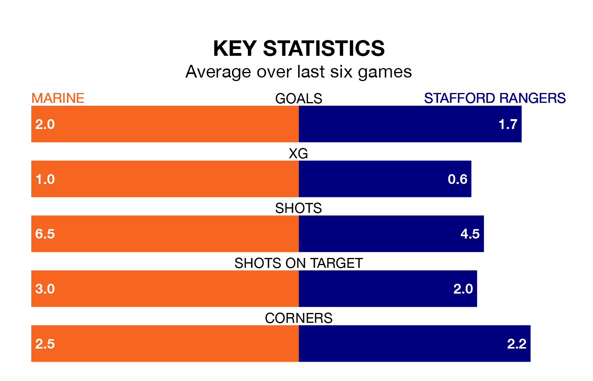

Marine host Stafford Rangers on Saturday at the Marine Travel Arena in Northern Premier League.
In their last league match, on January 6, Marine lost to Hyde United 4-1 at home.
Stafford also lost, 1-0 at home against Basford United.
Stafford are 21st in the table after 25 games, of which they have won five and drawn two, earning 17 points.
Marine are 13 places ahead of Rangers in eighth, with 11 wins and six draws putting them on 39 points.
With 27 goals in 25 games so far this season, the visitors are scoring at below the league average rate with 1.1 goals per game. And they are conceding more than average, letting in 54 goals at a rate of 2.2 per game.
The home side, meanwhile, are above average scorers, with 1.9 goals per game, compared to a league average of 1.6. They have conceded 1.3 goals per game.
In the last 10 years, Marine and Stafford have played each other on nine occasions. Marine won five of them, Stafford two, and they drew twice.
On average, Marine scored 1.2 goals and Stafford 0.8 in those matches.
Their last meeting was on September 9, when Marine won 2-0 away.
Marine are in mixed form in Northern Premier League, with two wins and two draws from their last six games.
With two wins and four losses over that period, Stafford's form is slightly worse – they have taken six points from 18, compared to Marine's eight.
Updated: 10:50, 10/01/24